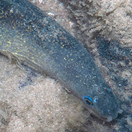
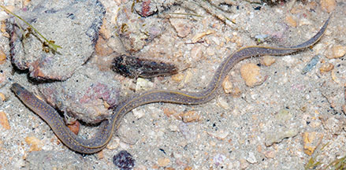
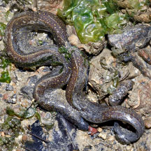
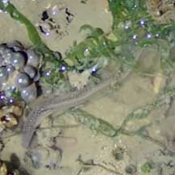
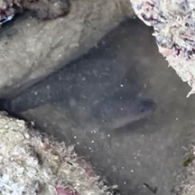
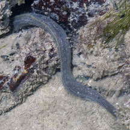
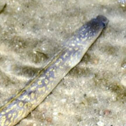
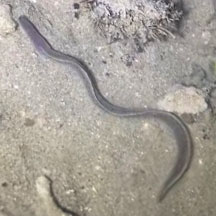
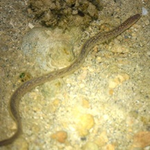

|
|
| fishes text index | photo index |
| Phylum Chordata > Subphylum Vertebrate > fishes > Family Muraenidae |
| Estuarine
moray eel Gymnothorax tile Family Muraenidae updated Sep 2020 Where seen? This slender snake-like fish with yellow speckles is sometimes seen on our undisturbed shores in rubbly areas near mangroves and seagrass meadows on many of our shores. It is more lively at night, where it can be seen actively wriggling around checking crevices for hidden prey. Features: To about 60cm, those seen were about 15-30cm. Body long and cylindrical, only somewhat flattened sideways towards the tail. No pelvic or pectoral fins. Dorsal and anal fins extend over the entire length of the long body and are continuous with the tail fin, resulting in the typical eel-like profile. Instead of scales, it has thick, smooth skin. Eyes small. Jaws filled with lots of sharp teeth. A pair of tubular nostrils at the tip of the snout, and small circular gill openings. Bluish grey, brown to reddish-brown with numerous yellowish-white speckles. These speckles may fade in large adults. It swims by undulating its muscular body in S-shapes, rather like a snake. Sometimes mistaken for sea snakes or eels. Here's more on how to tell apart sea snakes, eels and eel-like animals. |
 Tubular nostrils. No pelvic fins Chek Jawa, Jun 14 |
 Dorsal, anal and tail fins are continuous. Sisters Island, Jan 10 |
|
| Human uses: Unfortunately, it is commonly taken for the live aquarium trade. |
| Estuarine moray eels on Singapore shores |
On wildsingapore
flickr
|
| Other sightings on Singapore shores |
 Pasir Ris Park, Jan 26 Photo shared by Loh Kok Sheng on facebook. |
||
 Beting Bronok, Jul 22 Photo shared by Kelvin Yong on facebook. |
 East Coast (PCN), Feb 24 Video shared by Kelvin Yong on facebook. |
||
 Labrador, Oct 25Photo shared by Yan Le Su on facebook. |
 |
 Sentosa Serapong, Jul 25 Photo shared by Kelvin Yong on facebook. |
 Terumbu Pempang Tengah, May 11 |
Links
|